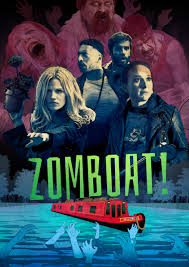

Zomboat!
1/10
This show was a total queer bait. I do not believe for a single second that Kat was straight and wanted to hook up with Sunny. It was a mountain of bullshit that I climbed up and now I want to fall down so I never have to watch it again. Why do people see the need to make things straight? Just for the fun of it?